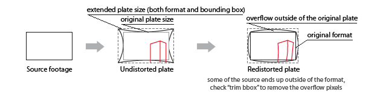
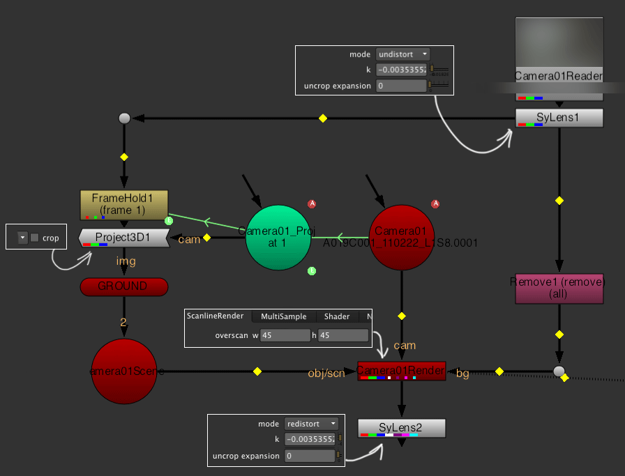
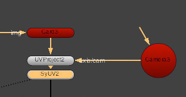
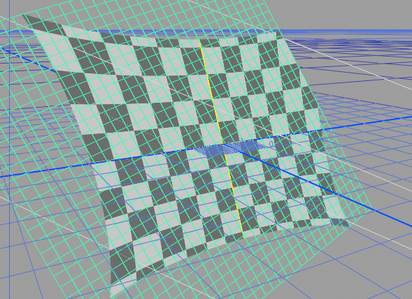
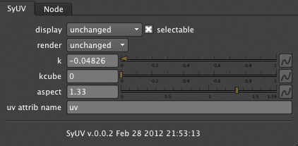
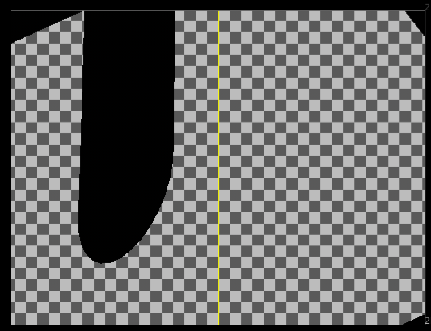
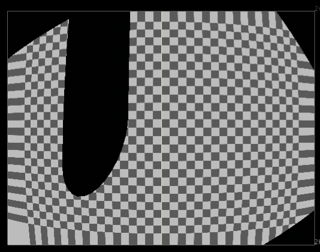
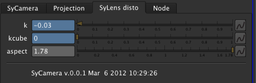
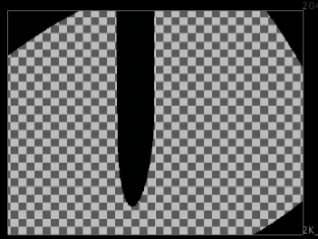
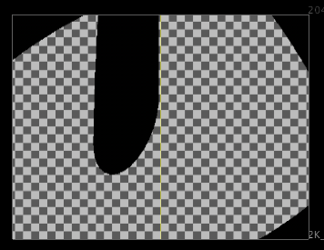

SyLens for Nuke
These plugins help to prep images that have been undistorted using the Syntheyes matchmoving software. It implements the same undistortion algorithm
as the one embedded in Syntheyes and explained here.
The currently provided plugins are:
To get started right away, have a look at the sample.nk test file included with the plugin.
The SyLens node
SyLens node works with image inputs.
Undistorting footage
Punch in the lens distortion into the lens settings panel

or let Syntheyes compute it for you...

Then just punch in the computed distortion value into the k knob

You will probably note that the bounding box of your output will stick outside the format - this is perfectly fine, read below
how to deal with that
Redistorting footage
After all is done you might want to redistort either your whole comp or only the piece of CG that came to you from 3D (since it would have been
rendered from the undistorted film back size). To redistort, plug your oversize plate into a copy of SyLens with the "mode" switch set to
"redistort". See to it that other settings - k, kcube - stay the same!
Cropping and bounding box
The workflow in a nutshell:

Explanation of the UI controls
- mode
- When set to undistort, SyLens will remove lens distortion. When set to redistort SyLens will apply lens distortion
- k
- Quartic distortion coefficient. This is calculated by Syntheyes and needs to be punched in here.
- kcube
- Cubic distortion modifier. If you used this in Syntheyes you can apply it here as well. Note that this will not be reapplied during redistortion
- ushift
- Sometimes you are dealing with off-center lens distortion. This can occur when a lens is fitted onto the camera but not properly centered onto the sensor
(some lens adapters are especially susceptible to this, like the anamorphic Alexa fittings). Apply some margin here to shift your distortion midpoint left or right with regards to the
center of your digital plate.
- vshift
- Sometimes you are dealing with off-center lens distortion. This can occur when a lens is fitted onto the camera but not properly centered onto the sensor
(some lens adapters are especially susceptible to this, like the anamorphic Alexa fittings). Apply some margin here to shift your distortion midpoint up or down with regards to the
center of your digital plate.
- filter
- This selects the filtering algorithm used for sampling the source image, pick one that gives a better-looking result
- trim bbox
- When you apply distortion to the image, the bounding box that SyLens receives will usually grow. For example, when reintroducing distortion,
there will be overflow outside of the image:
When you are compositing redistorted items onto the source you generally don't want to have this overscan. When you enable trim bbox the
size of the bounding box will be reduced to fit within the actual output format, and no overscan pixels will be output or computed.
- debug info
- You can see what SyLens is doing. When you enable this, debug info will be written to STDOUT. If you start Nuke from the terminal then this
terminal will contain all the relevant output.
- only format
- If all you need is knowing the size of the background (for example to use as a background for the ScanlineRender node), but no actual pixels.
Checking this box will make Syntheyes output the format boxes only, but no computation of pixels will be done and no upstream pixels
will be requested or copied (and thing will speed up tenfold). When you use this as input for the 3D you can also enable and disable this
knob to check your alignment with the background.
Standard projection workflow caveats
SyLens creates images which have overflow bounding box, that is - bounding box that extends outside the image format. For that reason creating a roundtrip
projection setup needs a little work to get right.
To spare you some grief, here's how your DAG should look:

I am highlighting the special parameters from the node bin which differ from the defaults.
Important points:
- This relies on using Nuke's "overscan" (bbox that goes outside of the image format). Enable "Show overscan" in the viewer context menu to actually see
what's in there.
- Project3d will only project the image outside of the format with "crop" checkbox disabled
- You need to render some overscan from your ScanlineRenderer to fill the bbox covered area. By default the renderer only renders within the format
- Use your cameras as usual (do not change the field of view)
Alternatively, render with a SyCamera node instead of the standard camera and get even better results if your
meshes permit it.
The SyUV node
The SyUV node is a modifier for the input geometry. It will undistort your image in UV space so that you can preserve filtering steps.
It is built to account for projected UVs.
Workflow with UV distortion
Typically you would be using it like this:

Here we project the UVs from our projection camera.
Make sure that the camera you are projecting UVs from has it's vertical aperture set correctly. If you are seeing
mismatches between your projected UVs and the actual image, this is the culprit.
Afterwards, apply the SyUV node. You can also apply it to a plain Card, or you can
apply it to an arbitrary mesh - what is important is having the UVs projected from your camera, not the standard UVs or unwraps.
Create the node and dial in the controls just as the main SyLens plugin.
The undistorted image will look like this in the viewport. Note that to make efficient use of SyUV your geometry needs to be
relatively dense since we can only apply undistortion at the vertices of the image. Everything within one quad/triangle will be
interpolated in a linear fashion.

Explanation of the UI controls
The UI controls of SyUV are very similar to the standard SyLens plugin.

- k
- Quartic distortion coefficient. This is calculated by Syntheyes and needs to be punched in here.
- kcube
- Cubic distortion modifier. If you used this in Syntheyes you can apply it here as well.
- aspect
- The Syntheyes algorithm requires the aspect ratio of your distorted plate. This cannot be automatically deciphered from the UVs so
you need to dial it in manually. Use your image's aspect ratio.
- ushift
- Sometimes you are dealing with off-center lens distortion. This can occur when a lens is fitted onto the camera but not properly centered onto the sensor
(some lens adapters are especially susceptible to this, like the anamorphic Alexa fittings). Apply some margin here to shift your distortion midpoint left or right with regards to the
center of your digital plate.
- vshift
- Sometimes you are dealing with off-center lens distortion. This can occur when a lens is fitted onto the camera but not properly centered onto the sensor
(some lens adapters are especially susceptible to this, like the anamorphic Alexa fittings). Apply some margin here to shift your distortion midpoint up or down with regards to the
center of your digital plate.
- uv attrib
- Nuke allows for arbitrary UV attributes to be added to the main geometry. If you want to manipulate a non-standard UV channel punch it's name in
here. Normally you would leave this parameter at it's default setting.
The SyCamera node
The SyCamera node performs distortion in camera space. You can use it just like you would use a standard Nuke camera node. However, once plugged
into the render node it will distort the rendered output according to the Syntheyes algorithm.
Here's how a render looks with the standard Nuke camera:

...and here's how it looks rendered with the SyCamera:

The only difference with the standard Nuke camera is the addition of the SyLens controls tab. Use it the same way you would be using
SyLens.

Note that in order to achieve good redistortion you need to have enough vertices in your geometry. For example, a Cylinder having
only one span vertically only distorts at the caps with straight lines being traced between vertices:

..while a well-subdivided Cylinder will distort like this:

Explanation of the UI controls
- k
- Quartic distortion coefficient. This is calculated by Syntheyes and needs to be punched in here.
- kcube
- Cubic distortion modifier. If you used this in Syntheyes you can apply it here as well.
- aspect
- The Syntheyes algorithm requires the aspect ratio of your distorted plate. This cannot be automatically deciphered from the Camera node so
you need to dial it in manually. Use your image's aspect ratio.
- ushift
- Sometimes you are dealing with off-center lens distortion. This can occur when a lens is fitted onto the camera but not properly centered onto the sensor
(some lens adapters are especially susceptible to this, like the anamorphic Alexa fittings). Apply some margin here to shift your distortion midpoint left or right with regards to the
center of your digital plate.
- vshift
- Sometimes you are dealing with off-center lens distortion. This can occur when a lens is fitted onto the camera but not properly centered onto the sensor
(some lens adapters are especially susceptible to this, like the anamorphic Alexa fittings). Apply some margin here to shift your distortion midpoint up or down with regards to the
center of your digital plate.
Building the plugins
Go to the src directory, and there:
make -f Makefile.mac NDKDIR=/Applications/Nuke6.3v1/Nuke6.3v1.app/Contents/MacOS # for MacOS
make -f Makefile.lin NDKDIR=/mnt/server/thefoundry/Nuke6.3v1/Nuke6.3v1 # for Linux
The plugins only use some standard containers and the NDK API, so you won't need to compile Boost or other third-party
libraries.
Testing the plugins
See the scripts in the sample_scripts directory.
Credits
The plugins have been created by Julik Tarkhanov in Amsterdam in 2010, 2011 and 2012. Based on the 3DE distortion plugin by Matti Grüner.
Special thanks to Dmitry Korshunov for the Windows builds, Jonathan Egstad and Ivan Busquets for their tips and advice and to Marijn Eken for bug reports.
SyUV and SyCamera have been supported by Elefant Studios, Zürich and Miklos Kozary.
The beautiful landscape shot used in the test scripts has been provided by Tim Parshikov and Mikhail Mestezky and the "Drug Druga" production company.
Questions and remarks
For questions and comments shoot a mail to me _at_ julik.nl
License
Copyright (c) 2010 Julik Tarkhanov
Permission is hereby granted, free of charge, to any person obtaining
a copy of this software and associated documentation files (the
"Software"), to deal in the Software without restriction, including
without limitation the rights to use, copy, modify, merge, publish,
distribute, sublicense, and/or sell copies of the Software, and to
permit persons to whom the Software is furnished to do so, subject to
the following conditions:
The above copyright notice and this permission notice shall be
included in all copies or substantial portions of the Software.
THE SOFTWARE IS PROVIDED "AS IS", WITHOUT WARRANTY OF ANY KIND,
EXPRESS OR IMPLIED, INCLUDING BUT NOT LIMITED TO THE WARRANTIES OF
MERCHANTABILITY, FITNESS FOR A PARTICULAR PURPOSE AND
NONINFRINGEMENT. IN NO EVENT SHALL THE AUTHORS OR COPYRIGHT HOLDERS BE
LIABLE FOR ANY CLAIM, DAMAGES OR OTHER LIABILITY, WHETHER IN AN ACTION
OF CONTRACT, TORT OR OTHERWISE, ARISING FROM, OUT OF OR IN CONNECTION
WITH THE SOFTWARE OR THE USE OR OTHER DEALINGS IN THE SOFTWARE.